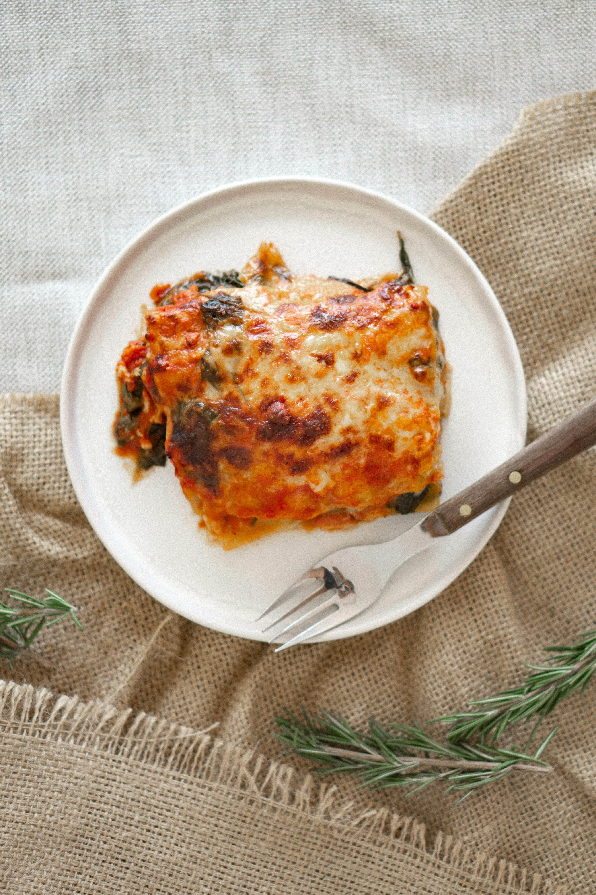

Lasagna

Delicious Lasagna
Photo by Anna Guerrero on
Pexels
Ingredients
- 9 lasagna noodles (cooked)
- 1 lb (450g) ground beef or turkey
- 2 cups marinara sauce
- 1 cup ricotta or cottage cheese
- 2 cups shredded mozzarella
- 1/4 cup grated Parmesan
- Salt, pepper, and Italian seasoning to taste
Directions
- Preheat oven to 375°F (190°C).
- Cook meat in a pan with seasoning until browned.
- Stir in marinara sauce and let simmer for 5 minutes.
- Layer in a baking dish: sauce, noodles, ricotta, mozzarella. Repeat.
- Top with remaining mozzarella and Parmesan.
- Bake for 25–30 minutes or until bubbly and golden.
- Let rest 10 minutes before serving.
Home